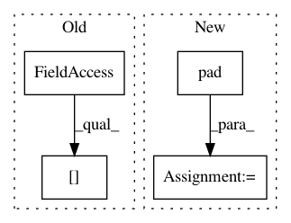

9d0ae2bfb48aa7d95c6f236d8b9f841fb64a525f,TTS/vocoder/datasets/wavernn_dataset.py,WaveRNNDataset,load_item,#WaveRNNDataset#,42
Before Change
if mel.shape[-1] < 5:
print(" [!] Instance is too short! : {}".format(wavpath))
self.item_list[index] = self.item_list[index + 1]
audio = self.ap.load_wav(wavpath)
mel = self.ap.melspectrogram(audio)
if self.mode in ["gauss", "mold"]:
After Change
min_audio_len = 2 * self.seq_len + (2 * self.pad * self.hop_len)
if audio.shape[0] < min_audio_len:
print(" [!] Instance is too short! : {}".format(wavpath))
audio = np.pad(audio, [0, min_audio_len - audio.shape[0] + self.hop_len])
mel = self.ap.melspectrogram(audio)
if self.mode in ["gauss", "mold"]:
x_input = audio
In pattern: SUPERPATTERN
Frequency: 4
Non-data size: 4
Instances
Project Name: mozilla/TTS
Commit Name: 9d0ae2bfb48aa7d95c6f236d8b9f841fb64a525f
Time: 2020-10-28
Author: erogol@hotmail.com
File Name: TTS/vocoder/datasets/wavernn_dataset.py
Class Name: WaveRNNDataset
Method Name: load_item
Project Name: explosion/thinc
Commit Name: d6d7cb7db51776b026514a1a2caa4073b9e998ad
Time: 2020-01-19
Author: honnibal+gh@gmail.com
File Name: thinc/backends/jax_ops.py
Class Name: JaxOps
Method Name: list2padded
Project Name: explosion/thinc
Commit Name: d6d7cb7db51776b026514a1a2caa4073b9e998ad
Time: 2020-01-19
Author: honnibal+gh@gmail.com
File Name: thinc/backends/ops.py
Class Name: Ops
Method Name: list2padded
Project Name: eriklindernoren/PyTorch-YOLOv3
Commit Name: 2ee8ac1546400645908b61ef015cdf5d71aa34cc
Time: 2019-04-22
Author: eriklindernoren@live.se
File Name: utils/datasets.py
Class Name:
Method Name: pad_to_square